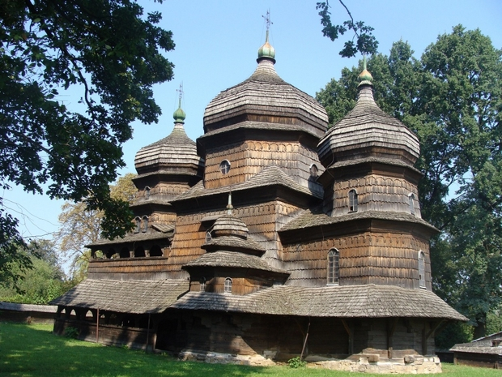

DREWNIANE CERKWIE W POLSKIM I UKRAIŃSKIM REGIONIE KARPAT

Wpis obejmuje 16 wybranych cerkwi, z których osiem znajduje się na terytorium Polski i osiem na Ukrainie. Są to: cerkiew św. Paraskiewy w Radrużu, cerkiew Narodzenia Przenajświętszej Bogurodzicy w Chotyńcu, cerkiew św. Michała Archanioła w Smolniku, cerkiew św. Michała Archanioła w Turzańsku (Podkarpacie) i cerkiew św. Jakuba Młodszego Apostoła w Powroźniku, cerkiew Opieki Bogurodzicy w Owczarach, cerkiew św. Paraskiewy w Kwiatoniu, cerkiew św. Michała Archanioła w Brunarach Wyżnych (Małopolska) i osiem na Ukrainie (cerkiew Zesłania Ducha Świętego w Potyliczu, cerkiew św. Dymitra w Matkowie, cerkiew Świętej Trójcy w Żółkwi, cerkiew św. Jerzego w Drohobyczu (obwód lwowski), cerkiew Św. Ducha w Rohatyniu i cerkiew Narodzenia Theotokos w Werbiążu Niżnym (obwód iwanofrankowski), cerkiew Wniebowstąpienia Pańskiego w Jasinie i cerkiew św. Michała w Użoku (obwód zakarpacki).